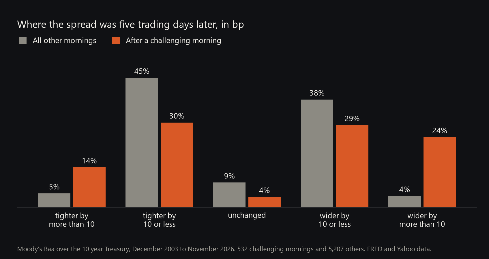
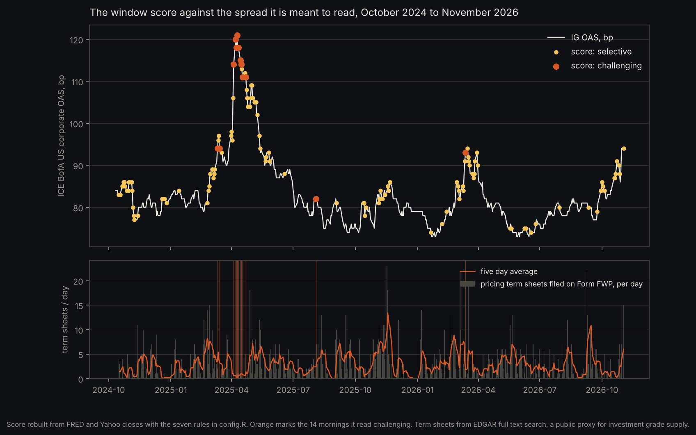

Morning Market Dashboard.

One screen for one question every morning: is the new issue window open?
In short
- The question
- When the score says shut, what do spreads do next?
- Data and method
- 538 mornings on all seven rules, then 5,744 back to December 2003 on six rules and Moody's Baa spread.
- What I found
- No direction. Spreads were tighter 43 percent of the time, against 50. The five day move was bigger, 11.9 bp against 4.5.
- What it means
- It tells you how big the next move is likely to be. I would not use it to call spreads.
A score built from the inputs a syndicate desk watches
Seven readings: VIX, MOVE, the one week move in IG and HY spreads, stock futures, the 10 year, and where spreads sit in their one year range. Built in R.

The snapshot is rebuilt with the dashboard on weekdays.
It tells you size. It cannot tell you direction.
Challenging mornings followed by tighter spreads. Other mornings, 50 percent.
Average five day move after a challenging morning. Otherwise 4.5 bp.
Followed by a widening of more than 10 bp. Otherwise 4 percent.
Mornings before a widening of more than 20 bp that already read challenging.
Term sheets on 14 challenging mornings, against 3.0 on open ones. Rho with the score, 0.04.
Moves the term sheet count more than the score does.

Where spreads were five days laterOrange is after a challenging morning. The large moves are more common both ways. 
The first test, October 2024 to November 2026Orange marks the 14 challenging mornings. Ten of them are one event.


What the score said when nothing priced
In April 2025 no investment grade deal priced after April 2, according to Reuters and Bloomberg. Paychex reopened the market on April 8. My rebuilt score read 9 of 14, selective, on April 3, and 2 of 14 on the morning the market came back.
In March 2026 press reports describe three sessions without a deal before the market reopened on Monday, March 23. In the three sessions before that, the score read 11, 9 and 13 of 14. It said open the morning before the market came back.
Headlines close the window before the levels do, and issuers come back before the levels recover. The score has no headlines in it and no calendar. A calendar is the first thing I would add.
What I got wrong first
The first version of this page said spreads tighten after a challenging morning 13 times out of 14, and that the score had never warned before a widening. I withdrew both. Ten of the 14 mornings were the April 2025 tariff episode, so I had four separate events. A rerun on current data adds October 23, 2026 and makes it 13 of 15. One rule did as well alone. When investment grade had widened by more than 8 bp over the prior week, spreads tightened 10 times out of 11.
The test also started counting a day late. A morning only knows the prior close. I measured from the close of the same day, so I skipped the first move. Counted from the close the score knew, it is 11 of 15. The script now counts it that way.
I also said the MOVE index and stock futures had only two years of public history. Both go back more than 20 years. The limit was the ICE spread series on FRED, which has carried only three years since April 2026.
What it does not show
The long test uses Moody's Baa yield over the 10 year, because the ICE index is no longer public that far back. The five day changes have a correlation of 0.79, but the levels do not match well. There is no high yield rule, and it uses cash S&P closes.
The 533 challenging mornings fall in about 50 episodes, so I resampled whole episodes. The 95 percent interval on 43 percent runs from 37 to 50, and on 24 percent from 13 to 30. LQD against IEF also shows no direction.
The term sheet count is a proxy. It catches about three filings a day against ten or so deals. At 7am the newest spread print is two closes old, so the dashboard shows its date. The code for both tests is in the repo.
What to know
The public build uses free data feeds only. The portfolio panel on the public build is a sample book and is labeled as one. A private version on my laptop pulls Bloomberg data through the API, with ten panels on the Treasury curve, DV01, P&L and credit spreads, and refreshes every morning. That version is not published.